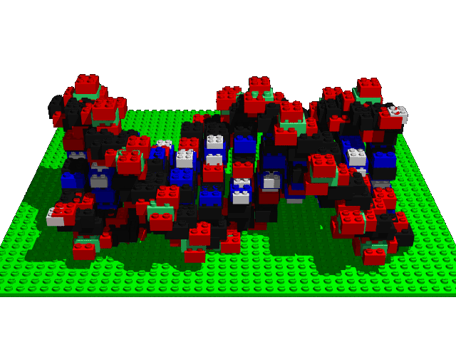

Proof Structures

Short Proofs
- Start with long (hard-to-find) proofs
- Use ATP techniques to find shorter proofs
Dependent Axioms
- Start with an axiomatization
- Use ATP to prove some axioms from the others
- Dependent axioms may need to be deduced for some proofs
Proof Dependence
- Start with a proof containing a formula
- Use ATP to find a proof not containing the formula
- If many proofs avoid an axiom, study the variety